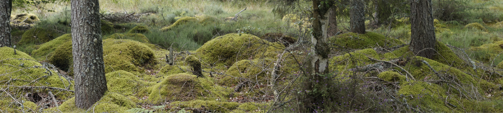

Zu den Wurzeln
Schottland (englisch/Scots Scotland, schottisch-gälisch Alba, lateinisch Caledonia) ist ein weitgehend autonomer Landesteil des Vereinigten Königreichs Großbritannien und Nordirland. Schottland besteht aus dem nördlichen Drittel der größten europäischen Insel Großbritannien sowie mehreren Inselgruppen und hat etwa 5,5 Millionen Einwohner. Die schottische Hauptstadt ist seit 1437 Edinburgh (vorher Perth).
Das Königreich Schottland und das Königreich England wurden ab 1603 in Personalunion regiert. 1707 wurden die beiden Staaten zum Königreich Großbritannien vereinigt. Durch den Zusammenschluss mit dem Königreich Irland entstand 1801 das Vereinigte Königreich Großbritannien und Irland.
In den letzten Jahrzehnten ist in Schottland eine starke Bewegung für eine Auflösung der Union mit England und damit die Abspaltung vom Vereinigten Königreich entstanden. Das Land hat bereits durch den Prozess der innerbritischen Devolution weitgehend Autonomiestatus innerhalb des Vereinigten Königreichs. Bei einer Volksabstimmung im September 2014 entschied sich eine Mehrheit der Wähler für einen Verbleib im Vereinigten Königreich. Nachdem am 23. Juni 2016 das Vereinigte Königreich in einem Referendum den Austritt aus der Europäischen Union beschlossen hat, werden Forderungen nach einem neuen schottischen Referendum über die Loslösung vom Vereinigten Königreich erhoben.[3] Die Mehrheit der schottischen Bürger hatte im Referendum für den Verbleib in der Europäischen Union gestimmt.
